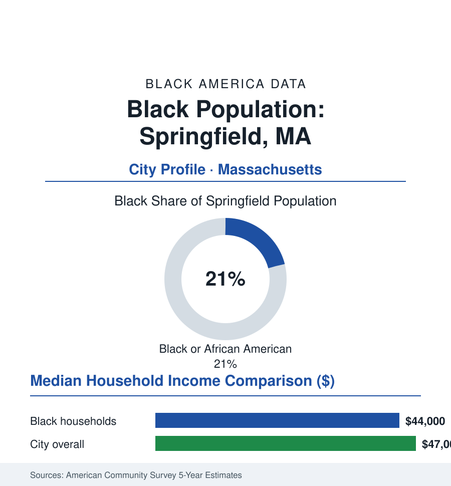

Black Cities
Black Springfield, Massachusetts: 33,000 People in Basketball's Birthplace
Springfield's Black community, about 33,000 strong and 21% of the city, is among New England's largest — anchored in Mason Square for a century. The census portrait.

Springfield's Black community numbers approximately 33,000 people — about 21% of the city's 155,000 residents — making the birthplace of basketball home to one of the largest Black populations, by share, of any city in New England. The community's anchor is Mason Square, the east-side crossroads where its churches, businesses, and political life have organized for a century, and its history runs from the Underground Railroad era through the armory and brass works to a present in which Black Springfield sits at the center of the city's government and its schools. This profile reads the Pioneer Valley's capital file.
From the Armory Works to Mason Square
Springfield's Black presence predates the republic's industry (the Revolutionary-era Black residents in the town records; the abolitionist stop on the Connecticut River corridor), and its growth followed the federal armory (the Springfield Armory's two centuries of gun-making — employing Black craftsmen and laborers across its span), the railroad and brass and machinery shops, and the Great Migration's smaller New England stream — Southerners arriving not in Chicago's volume but steadily, building the community block by block around Mason Square and the State Street corridor. The mid-century anchor institutions carry the record: the historic Black congregations (among New England's oldest — the Third Baptist tradition and its peers), the Dunbar community center (the settlement-house institution of the neighborhood since the 1920s in the local record), and the business row of the Square itself. The post-industrial decades cut the armory (closed 1968 — the city's Harvester moment) and the machinery tier, and the community's economy re-based onto the region's eds-and-meds: the hospital systems (Baystate Health — now the metro's largest employer), the insurance and finance back-offices of the Connecticut River valley, the colleges, and the public sector.
Schools, Colleges, and the Civic Center of Gravity
Springfield Public Schools enroll a student body roughly a fifth Black (alongside a large Latino plurality — the city's schools among New England's most diverse), with the community's educational landmarks including the historic high schools and the magnet tier. The campus map is commuter-and-regional: Springfield Technical Community College (the city's accessible engine, sited on the Armory grounds themselves), Western New England University, Springfield College (the YMCA's historic school — basketball's literal birthplace, its Black alumni and its community programs part of the city's weave), American International College (whose Black enrollment has long run among the region's highest for a four-year school), and UMass Amherst up the valley. The political data put the community at city hall's center: Black mayors and council leadership in the modern record, the state-representative delegation from the Square's districts a fixture of Beacon Hill, and the city's Black professional class (Baystate's workforce, the courts and the federal building's agencies, the colleges) giving Mason Square a civic weight beyond a neighborhood's. The cultural ledger: the Pan African Historical Museum (the community's own archive institution), the August flow of the Stone Soul festival tradition, and the Hall of Fame's city learning to tell the game's whole story.
The Economic Ledger
The ACS data give Black Springfield a distinctive profile among this section's hard-hit industrial cities: median Black household income in the mid forty-thousands — close under the city's overall median (the city's own income distribution compressed by its working-class whole) — homeownership in the mid-forty percent range on the east side's modest single-family stock (the Mason Square and Pine Point streets' valuations the appreciation file's New England floor), and poverty rates elevated but below the section's deepest readings. The workforce composition in the census record: healthcare above all (Baystate's multi-thousand workforce across its tiers), education and the public sector, logistics along the I-91 corridor, and the service economy of the region's retail center. The live data argument is the city's post-industrial reinvestment geography: the casino-era downtown investments, the Union Station revival, and the tornado-recovery rebuilding (2011's storm cut through the city's south and east) distribute their benefits across a map whose Black neighborhoods sit close to — but not always inside — the investment lines.
Reading Springfield's Numbers
A fifth of the city, its own square, its schools and its hospital carrying the community's name in the workforce rolls: Springfield is the atlas's New England case — a Black community of industrial vintage at full civic scale in a region whose Black geography most Americans never picture. The game invented here is played everywhere now. The community that shares its hometown intends, in the clear record of its institutions, to be counted in everything the hometown does next.
More in Black Cities
Black Atlanta: Population, Distribution, and Growth of a Black Metropolis
Metro Atlanta holds more than two million Black residents — roughly one in three, second only to New York. The suburban distribution, migration history, and composition of Black Atlanta in the census data.
Black New York: The Largest Black Population in America
The New York metropolitan area holds about 3.4 million Black residents — more than any metro in the nation — and the city itself about two million. The census profile.
Black Washington: The District and the Metro
The Washington metro holds about 1.6 million Black residents, and the District itself — long a majority-Black city — now records a Black share near 41 percent. The census profile.
Source: U.S. Census Bureau, 2020 Census and American Community Survey 5-year estimates; City of Springfield; Springfield Museums and the Wood Museum of History archives.